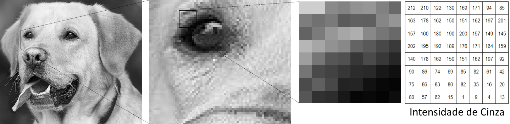
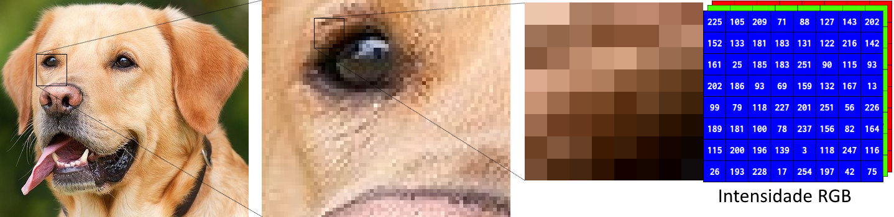

A filtragem espacial é uma técnica usada em processamento de imagens.
O principal objetivo dela é fazer uma transformação da imagem digitalizada pixel a pixel de modo que a imagem resultante seja mais adequada que a imagem original para uma aplicação específica. Ressaltando que o "mais adequado" é subjetivo.
Para fazer isso, o processo utiliza os valores númericos da intensidade de cor que os pixeis possuem. Uma imagem digital pode ser representada como uma matriz, onde cada elemento da matriz é representado por um valor da intensidade da escala de cores de cada pixel. Numa imagem preto e branco, por exemplo, o valor da intensidade de cinza dentro de cada pixel pode variar de 0 a 255, sendo o zero o valor mais escuro (preto) e 255 o valor mais claro (branco). Esses valores representados de cada pixel em uma sequência formam a imagem digital que visualizamos em um monitor.

O principal objetivo dela é fazer uma transformação da imagem digitalizada pixel a pixel de modo que a imagem resultante seja mais adequada que a imagem original para uma aplicação específica. Ressaltando que o "mais adequado" é subjetivo.
Para fazer isso, o processo utiliza os valores númericos da intensidade de cor que os pixeis possuem. Uma imagem digital pode ser representada como uma matriz, onde cada elemento da matriz é representado por um valor da intensidade da escala de cores de cada pixel. Numa imagem preto e branco, por exemplo, o valor da intensidade de cinza dentro de cada pixel pode variar de 0 a 255, sendo o zero o valor mais escuro (preto) e 255 o valor mais claro (branco). Esses valores representados de cada pixel em uma sequência formam a imagem digital que visualizamos em um monitor.
Já em uma imagem colorida, cada pixel possui três valores de intensidade para as cores que colorem os
pixeis: os valores RGB (red, green, blue), que indicam a quantidade de vermelho, verde e azul que um
pixel tem, logo, a imagem colorida digital pode ser interpretada como uma matriz de vetores com três
elementos, ou, três matrizes que guardam as informações daqueles pixeis.

Filtros espaciais utilizam uma matriz máscara, também conhecido como kernel, para realizar a filtragem.
Um filtro pode ser Linear ou não-linear.
Filtro Linear: Pondera o valor da imagem durante o processamento.
Filtro Não-Linear: Não pondera o valor da imagem durante o processamento.
Filtro Linear: Pondera o valor da imagem durante o processamento.
Filtro Não-Linear: Não pondera o valor da imagem durante o processamento.